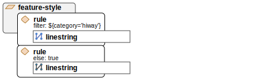

Structure¶
Here is a simple example of a YSLD style containing a single rule inside a single feature style:
name: style_example
title: An example of YSLD styling
abstract: Used in the User Manual of GeoServer
feature-styles:
- rules:
- name: all
title: Every feature will be styled this way
symbolizers:
- polygon:
fill-color: '#808080'
fill-opacity: 0.5
stroke-color: '#000000'
stroke-opacity: 0.75
This would style every polygon feature in a given layer with the given RGB color codes (a medium gray for a fill and black for the outline), with the given opacities for both fill and stroke being given in decimals indicating percentage (so 0.5 is 50% opaque).
Note
For more details on syntax, please see the section on symbolizers.
The structure of a typical YSLD file is as follows:
Structure |
Description |
|---|---|
|
For common style settings |
|
Used to define style based on tile set zoom level |
|
Document name, title, and abstract followed by feature-styles  |
Independent block that can contain one or many rules.  |
|
Directive that can contain one or many symbolizers.  |
|
A rule “includes” all features unless made to be selective by the use of a filter.  |
|
basic unit of a style containing the actual visualization instructions for individual features. |
The structure YSLD files is outlined using indentation.
Structure of YSLD style_example¶
Property syntax¶
Individual statements (or directives) in a YSLD styling document are designed as key-value, or property-value pairs of the following form:
<property>: <value>
The <property> is a string denoting the property name, while the <value> can be one of a number of different types depending on context. These different types require slightly different markup, as shown in the following table:
Type |
Syntax |
Example |
Notes |
|---|---|---|---|
Integer |
Value only |
|
Quotes allowed as well |
Float |
Value only |
|
Quotes allowed as well |
Text |
Quotes |
|
Spaces, colons, and other special characters are allowed. If value is amiguous, use single quotes. |
Color |
|
|
Used when specifying RGB colors. For hex, use |
Tuple |
Brackets |
|
Use two single quotes to denote blank entries in the tuple (for example: |
Filter or other expression |
${<expression>} |
|
If attribute name is ambiguous, encase in brackets (for example: |
Expressions¶
Throughout the reference guide, there are references to values that are denoted by <expression>. An expression is a flexible term meaning that the value can be one of the following kinds of objects:
Literal (scalar or string)
Attribute name
If using a function, it must evaluate to match the type expected by the property.
Mappings and lists¶
Note
The following discussion is taken from basic YAML syntax. Please refer to the YAML specification if necessary.
There are three types of objects in a YSLD document:
Scalar, a simple value
Mapping, a collection of key-value (property-value) pairs
List, any collection of objects. A list can contain mappings, scalars, and even other lists.
Lists require dashes for every entry, while mappings do not.
For example, a symbolizer block is a list, so every entry requires its own dash:
- symbolizer:
- polygon:
...
- text:
...
The point: and text: objects (the individual symbolizers themselves) are mappings, and as such, the contents do not require dashes, only indents:
- polygon:
stroke-color: '#808080'
fill-color: '#FF0000'
The dash next to polygon means that the item itself is contained in a list, not that it contains a list. And the placement of the dash is at the same level of indentation as the list title.
It is sometimes not obvious whether an object should be a list (and use dashes) or a mapping (and not use dashes), so please refer to this table if unsure:
Object |
Type |
|---|---|
List |
|
List |
|
List |
|
Individual symbolizers (contents) |
Mapping |
Mapping |
|
Color table (for raster symbolizers) |
List |
Indentation¶
Indentation is very important in YSLD. All directives must be indented to its proper place to ensure proper hierarchy. Improper indentation will cause a style to be rendered incorrectly, or not at all.
For example, the polygon symbolizer, since it is a mapping, contains certain parameters inside it, such as the color of the fill and stroke. These must be indented such that they are “inside” the polygon block.
In this example, the following markup is correct:
- polygon:
fill-color: '#808080'
fill-opacity: 0.5
stroke-color: black
stroke-opacity: 0.75
The parameters inside the polygon (symbolizer) are indented, meaning that they are referencing the symbolizer and are not “outside it.”
Compare to the following incorrect markup:
- polygon:
fill-color: '#808080'
fill-opacity: 0.5
stroke-color: black
stroke-opacity: 0.75
The parameters that are relevant to the polygon block here need to be contained inside that block. Without the parameters being indented, they are at the same “level” as the polygon block, and so will not be interpreted correctly.
Note
For more details on symbolizer syntax, please see the section on symbolizers.
Wrapped lines¶
Long lines can be wrapped by indenting each subsequent line in the text block. New line characters will be converted to spaces, so each line should not end with a space.
So in a situation with a long value:
- name: shortname
title: Longer name
abstract: This is a really long abstract that in no way is ever likely to fit on a single line on most people's displays.
This can be altered to look like:
- name: shortname
title: Longer name
abstract: This is a really long abstract that in no way
is ever likely to fit on a single line on most
people's displays.
In both cases, the value for abstract is unchanged.
Wrapped lines can be done between properties and values as well. So this single line:
stroke-width: ${roadwidth / 500}
Can be altered to look like:
stroke-width:
${roadwidth / 500}
The only constraint with using wrapped lines is that the subsequent lines need to be indented.
Comments¶
Comments are allowed in YSLD, both for descriptive reasons and to remove certain styling directives without deleting them outright. Comments are indicated by a # as the first non-blank-space character in a line. For example:
# This is a line symbolizer
- line:
stroke-color: '#000000'
stroke-width: 2
# stroke-width: 3
The above would display the lines with width of 2; the line showing a width of 3 is commented out.
Comment blocks do not exist, so each line of a comment will need to be indicated as such:
- line:
stroke-color: '#000000'
stroke-width: 2
#- line:
# stroke-color: '#FF0000'
# stroke-width: 3
Note
Comments are not preserved when converting to SLD.